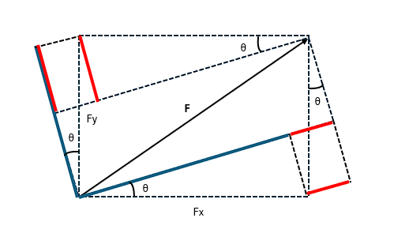
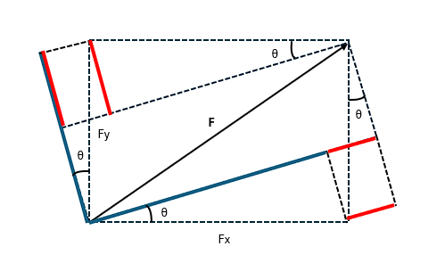

回転運動について
ここからは回転運動をどのように扱うかを見ていくことにしよう。まず、回転というのはある一点を軸にその周囲を運動することを言う。その様子を記述する際に、ちょうど二体問題で扱った極座標が便利なので、これを用いることにする。すなわち、通常の運動方程式は直交座標系を用いて
であるが、これを極座標におきかえる際に
であることを踏まえて
と計算されることから、以下の方程式が得られる。
ここで右辺の力に関しては、それぞれ以下の図にある通り極座標の各成分の力になっていることが分かる（ に関しては赤線と青線の長さを足したもの、 については 青線から赤線を引いた長さになっている）。
 

つまり、先ほどの方程式はそれぞれ極座標の各成分の運動方程式になっていることが分かる。
ここで各成分を見てみると、動径方向については
といように通常の運動方程式にあたかも力 （遠心力）が遠ざかる方向に加わった形になっている。次に、角度方向については二体問題と同じように を書けて整理すると
というように を用いて書ける。ここで回転する条件を考えたとき、角度方向に動いていれば回転することから角度の時間微分（角速度）が0でないことが予想される。すなわち、角速度を としたときに以下の条件が成り立つものと考えられる。
そこで、先ほどの式を を用いて表記し直すと
となるが、このうち は従来の運動量が質量（慣性質量）と速度の掛け算であったことを踏まえ
というように （慣性モーメント）を用いると、 は角度方向の運動量（角運動量）として扱うことができる。すると、 は回転運動を変化させる量として （モーメント）としてみなすことができ、
というように回転の運動方程式として記述される。ここで、 については直交座標系で見た時に
となるが、これは外積と呼ばれる関係になっているものと思われる。例えば、以下のようにベクトル がある場合、外積 は以下の形で表される。

試しに として外積をとると、以下の通り 成分が先ほどの と一致していることが分かる。
そのため、回転方向については 成分に関する方程式になっていると考えられる。そこで、運動方程式
に外積をとり 成分を見てみることにする。まず、両辺に と外積をとると
であり、左辺を変形すると
であるから以下の通りになる。
ここで、左辺を極座標で整理すると
というように 成分が角運動量 と同じ形になるため、最終的に以下の通りになる。
以上の内容を質点系に応用すると、通常の運動方程式
の両辺に外積をとることで
となり、ここで右辺第2項目に関して を利用すれば
であるため、 と が平行であることから0になる。そのため、最終的には以下の形になる。
更に速度の形に変形すると、左辺は
となり、回転軸から質点の位置が不変であれば 以下のような形になる。